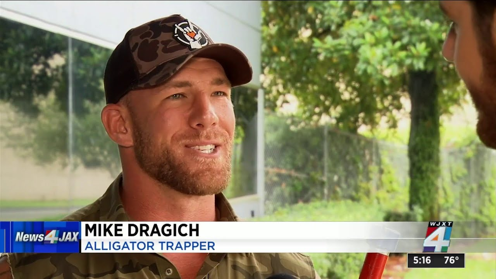

JACKSONVILLE, Fla. — No shoes, no equipment, no problem for our good friend Mike Dragich, a.k.a. "Blue Collar Brawler."

Dragich, a licensed Florida alligator trapper, MMA artist, veteran, and nonprofit leader in Florida, trapped and removed an 8-foot gator wandering the streets on Jacksonville's Northside.
Dragich told News4JAX he was at a Jacksonville Icemen game with his family when he heard the nuisance gator call from the Jacksonville Sheriff's Office seeking a trapper. He jumped in the car and when he arrived near a shopping plaza on Edgewood Avenue W and Vernon Road, he saw the large beast.
He didn't have his equipment with him so he caught the gator in True Florida man style — with his bare hands! And bare feet…
Don't get caught!
Move your mouse to escape the gator.
"I was at a hockey game (in) downtown Jacksonville with my family!" Dragich told News4JAX. "Jacksonville Sheriff's Office called the emergency alligator situation to FWC and I was dispatched. It was only five minutes from the game, so I literally left the game, caught the alligator, and then went back to the game!"
 Watch video
Watch video
News4JAX video opens on YouTube.
Reminder: Do not try this on your own. If you see an aggressive or nuisance alligator, call the FWC's toll-free Nuisance Gator Hotline at 866-FWC-GATOR (866-392-4286).
Dragich has gained notoriety for past gator removals, including one he wrestled from a Jacksonville school campus. He's amassed tens of thousands of followers for his gator wrestling skills and his daringness. He's used the fame to draw attention to his nonprofit, Project Savior Outdoors, which provides retreats for military veterans to prevent suicide.
Article by WJXT News4JAX (2024). Written by Carianne Luter.